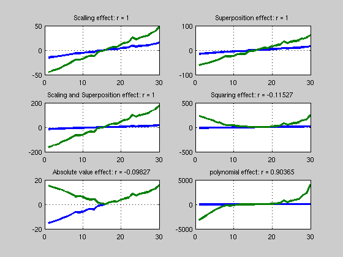
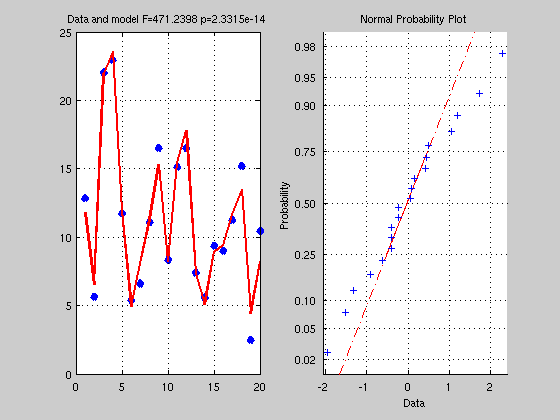
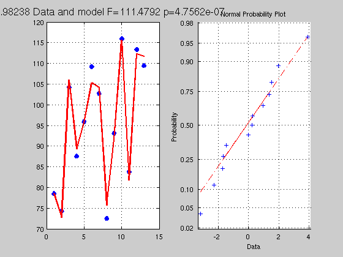
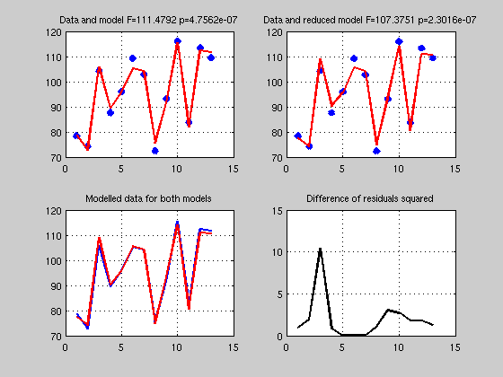
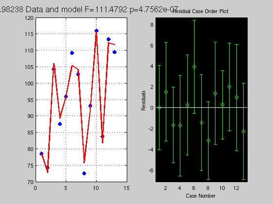
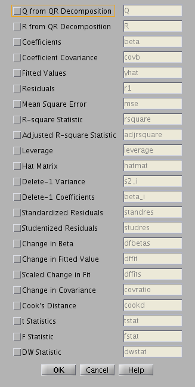
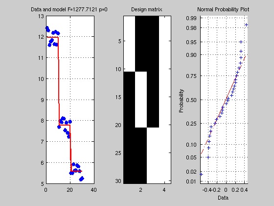
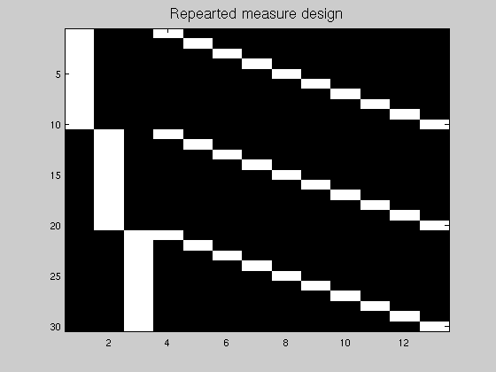

Contents
% This matlab file is a companion to the % 2 lectures on the General Linear Model % % Cyril Pernet January/February 2011
1. Linearity
Definition
1. the quality or state of being linear 2. Electronics: the extent to which any signal modification process, as detection, is accomplished without amplitude distortion 3. Physics: the extent to which any effect is exactly proportional to its cause
TWO KEY NOTIONS
additivity (or superposition): the total response to a set of inputs is the sum of individual inputs (y = x1+x2)
scaling (or homogeneity of degree 1): the magnitude of the system output is proportional to the system input (y = ax)
see http://en.wikipedia.org/wiki/Linear
% --------------------- % Linear correlations % --------------------- clear all; clc % create 2 variables and correlate x1 = [-15:14]' + randn(30,1); x2 = 3*x1; r = corr(x1,x2,'type','Pearson'); figure('Name','Correlations') subplot(3,2,1); title('Linear correlation'); plot([x1 x2],'LineWidth',3); grid on; title(['Scalling effect: r = ' num2str(r)]); % Superposition x3 = x1 + x2; r = corr(x1,x3,'type','Pearson'); subplot(3,2,2); plot([x1 x3],'LineWidth',3); grid on; title(['Superposition effect: r = ' num2str(r)]); % Scaling and Superposition x4 = x2 + 2*x3 + 5; % = 11*x1 + 5 r = corr(x1,x4,'type','Pearson'); subplot(3,2,3); plot([x1 x4],'LineWidth',3); grid on; title(['Scaling and Superposition effect: r = ' num2str(r)]); % Non linear ^2 x5 = x1.^2; r = corr(x1,x5,'type','Pearson'); subplot(3,2,4); plot([x1 x5],'LineWidth',3); grid on; title(['Squaring effect: r = ' num2str(r)]); % non linear abs x6 = abs(x1); r = corr(x1,x6,'type','Pearson'); subplot(3,2,5); plot([x1 x6],'LineWidth',3); grid on; title(['Absolute value effect: r = ' num2str(r)]); % non linear but .. x7 = 3*x1 + x1.^2 + x1.^3; r = corr(x1,x7,'type','Pearson'); subplot(3,2,6); plot([x1 x7],'LineWidth',3); grid on; title(['polynomial effect: r = ' num2str(r)]); % yes polynomes are special cases % exercise: try a different argument 'type' for the corr function
2. Linear algebra
with linear algebra one uses matrices to write equations as we shall see this turns out to be very usefull as it can solve very quickly complex linear systems
a simple linear system with two variables can be 2x - y = 0 -x + 2y = 3
in matrix notation this is
clc; clear; close X = [2 -1; -1 2]; Y = [0 3]'; % we can know apply the same principle as solving a single equation % for instance y = bx is solved by finding b = 1/x * y % with matrices we also use the inverse, except that the inverse of % a matrix is a bit more complicated I = eye(2); % this is called the identity matrix because X*I = I*X = X (just as x*1 = 1*x = x) Xinv = inv(X); % this is the inverse of A defined as X*Xinv = I jus as 1/x * x = 1 test = (Xinv*X == I); % the solution of our linear system is therefore B = inv(X)*Y; % just as with numbers b = 1/x * y % which we can check XB = X*B; % = Y % in geometrical terms, each column of a matrix describes a vector - the % solution is to find how much (B) of each vector (X(:,i)) we need to arrive to the point Y
3. Simple linear regression
In a regression we have some observations Y that we want to explain by a variable X by contrast with a linear system as describe above, there is usually no perfect solution the model is y = b1x + b2 + e with b1 how much of x we need to get close to y, b2 the intercept or offset and e the error that is the part that is not explained by x. However, we can see that a regression is a linear model since y is expressed as a function of x using additivity and scaling. The statisitcs is simply to evaluate how much we explain by x given the error.
clc; clear % y = b1x + b2 + e % let generate some data x = rand(20,1)*5; % x is the VI we manipulate Y = 4*x + 3 + randn(20,1); % Y is the VD we measure, we run here a forward model + add noise % get a solution, ie find b1=4 and b2=3 X = [x ones(20,1)]; % ones are for b2 which is not a function of x but a constant to add for each x % X is not squared so inv(X) is not possible % a simple solution is to multiply by the transpose % making the matrix X'X square % Y = XB --> X'Y = X'XB --> inv(X'X)X'Y = inv(X'X)X'XB --> but inv(X'X)X'X = I thus B = inv(X'*X)*X'*Y; % check what it looks like Yhat = X*B; % Yhat is the model Res = Y - Yhat; % Residual (error) % get some statistics % = estimate if the model Yhat explain above the error Res SStotal = norm(Y-mean(Y)).^2; % what is the norm of a vector? = sum((Y-mean(Y)).^2) SSeffect = norm(Yhat-mean(Yhat)).^2; % just like in books, sum of the difference xi - mean(x) SSerror = norm(Res-mean(Res)).^2; df = rank(X)-1; % what is the rank ? see also http://en.wikipedia.org/wiki/Linear_independence dferror = length(Y) - df - 1; R2 = SSeffect / SStotal; % how much we explain of the total F = (SSeffect / df) / (SSerror / dferror); % how much is explain given the error, this is the same as R2*dfe / (1-R2)*df p = 1 - fcdf(F,df,dferror); % make a figure figure('Name','Simple Regression'); subplot(1,2,1); plot(Y,'x','LineWidth',5); hold on plot(Yhat,'r','LineWidth',2); grid on; title(['Data and model F=' num2str(F) ' p=' num2str(p)]) subplot(1,2,2); normplot(Res);
4. Multiple linear regression
This is the same as above except that we have more variables - however, using linear alebra we can find as easily the regression coefficients. In addition to testing the model, we usually also test for the weight of each regressor. The relative contribution of 1 regressor to the data given the model is the partial correlation coefficient (how much x1 explains of y when we control for the influence of all other xs on both y and x1) and the relative contribution of 1 regressor to the total variance is the semi-partial correlation coefficient (how much x1 explains of y when we control for the influence of all other xs on x1 only)
clc; clear; close % y = b1x1 + b2x2 + b3x3 + b4x4 + b5 % let's take data stored in matlab exemples load hald; Y=hald(:,5) ; X=hald(:,1:4); % get a solution, X = [X ones(length(X),1)]; B = inv(X'*X)*X'*Y; % just as above Yhat = X*B; Res = Y - Yhat; SStotal = norm(Y - mean(Y)).^2; SSeffect = norm(Yhat - mean(Yhat)).^2; SSerror = norm(Res-mean(Res)).^2; df = rank(X)-1; dferror = length(Y) - df - 1; R2 = SSeffect / SStotal; F = (SSeffect / df) / (SSerror / dferror); p = 1 - fcdf(F,df,dferror); % make a figure figure('Name','Multiple Regression'); subplot(1,2,1); plot(Y,'x','LineWidth',5); hold on plot(Yhat,'r','LineWidth',2); grid on; title(['R^2 ' num2str(R2) ' Data and model F=' num2str(F) ' p=' num2str(p)],'FontSize',14) subplot(1,2,2); normplot(Res); % ------------------------------------ % semi-partial correlation coefficient % ------------------------------------ % let's think of the model and what it means it terms of geometry. % the data Y can be described as a vector and a point in R_20 % a space with 20 dimensions. We then establish a model X with 5 % regressors; that is we look for a combination of these 5 vectors which % will get as close as possible to Y. To find the actual contribution of x1 % to the data for this model one needs to look at how much x1 explains % to the total variance, ie we want to compare the R2 between the full and % a reduced model without x1 - the difference will be how much x1 explains in Y. Xreduced = X(:,2:end); % reduced model all minus 1st regressor Breduced = inv(Xreduced'*Xreduced)*Xreduced'*Y; Yhatreduced = Xreduced*Breduced; Resreduced = Y - Yhatreduced; dfreduced = rank(Xreduced) -1 ; dferrorreduced = length(Y) - dfreduced - 1; SSeffectreduced = norm(Yhatreduced-mean(Yhatreduced)).^2; SSerrorreduced = norm(Resreduced-mean(Resreduced)).^2; R2reduced = SSeffectreduced / SStotal; Freduced = (SSeffectreduced / dfreduced) / (SSerrorreduced / dferrorreduced); preduced = 1 - fcdf(Freduced,dfreduced,dferrorreduced); Semi_Partial_corr_coef = R2 - R2reduced; dfe_semi_partial_coef = df - dfreduced; F_semi_partail_coef = (Semi_Partial_corr_coef*dferror) / ... % variance explained by x1 ((1-R2)*dfe_semi_partial_coef); % unexplained variance overall p_semi_partial_coef = 1 - fcdf(Semi_Partial_corr_coef, df, dfe_semi_partial_coef); % note df is from the full model % make a figure figure('Name','Multiple Regression - Full versus reduced model'); subplot(2,2,1); plot(Y,'x','LineWidth',5); hold on plot(Yhat,'r','LineWidth',2); grid on; title(['Data and model F=' num2str(F) ' p=' num2str(p)]) subplot(2,2,2); plot(Y,'x','LineWidth',5); hold on plot(Yhatreduced,'r','LineWidth',2); grid on; title(['Data and reduced model F=' num2str(Freduced) ' p=' num2str(preduced)]) subplot(2,2,3); plot(Yhat,'b','LineWidth',2); grid on; hold on plot(Yhatreduced,'r','LineWidth',2); title('Modelled data for both models') subplot(2,2,4); plot((Res-Resreduced).^2,'k','LineWidth',2); grid on; hold on title('Difference of residuals squared') % -------------------------------- % partial correlation coefficient % -------------------------------- % As we shall see below, this is easily obtained using projections - but % for now let just think about what we want to measure. We are interested % in knowing the correlation between y and x1 controlling for the effect of % the other xs, that is removing the effect of other xs. Compred to % semi-parital coef we also want to remove the effect of xs on y or if you % prefer we want to compute how much of x1 we need to get to the point % defined by the xs which is the closest to Y % above we removed X(:,2:end) from Y and got Resreduced % we need to do the same for x1 so that we can correlate x1 and y witout xs x = X(:,1); B = inv(Xreduced'*Xreduced)*Xreduced'*x; xhat = Xreduced*B; Resx = x - xhat; % the correlation between Resreduced and Resx is the partial coef Partial_coef = corr(Resx,Resreduced); % -------------------------------------------------- 
5. Matlab tools for regressions (from stat toolbox)
-------------------------------------------------
clc; close [B,Bint,r,rint,stats] = regress(Y,X); % Removes NaN data % B are the beta parameters exactly what we have abbove with inv(X'*X)*X'*Y % B int are the 95% confidence intervals for the coefficient % r are the residuals - same as above % r int are the 95% confidence intervals of residuals - note it should % include 0 otherwise would suggest that a point is not well fitted (outlier?) % this can be checked with rcoplot(r,rint); % stats: R2 statistic, the F statistic and its p value, and an estimate of the error variance. regstats(Y,X(:,2:end)); % call a GUI - WARNING NO INTERCEPT SHOULD BE USED % stats = regstats(y,X,model,whichstats) does not call the gui and returns % in stats the paramters specified in whichstats [br,statsr] = robustfit(X(:,2:end),Y); % robust estimate using iterative weighted least square % GLMFIT works for regression and ANOVAs [b,dev,stats] = glmfit(X(:,2:end),Y,'normal'); % pretty cool feature is that you can have other types of distributions % shame none of the above do partial coef and semi-partial coef. % ------------------
Warning: Matrix is close to singular or badly scaled.
Results may be inaccurate. RCOND = 2.071144e-17.
Warning: Matrix is close to singular or badly scaled.
Results may be inaccurate. RCOND = 2.071144e-17.
Warning: X is rank deficient, rank = 4
Warning: X is ill conditioned, or the model is
overparameterized, and
some coefficients are not identifiable. You should use
caution
in making predictions.
  6. One-way ANOVA
-----------------
We now describe a one-way ANOVA as a linear model, just as we did with regression - the standard model is y = u + xi + e that is the data are equal to the mean + effect of treatment + error. The effect of the treatment for each condition is suppose to be the same for each y in a given condition - this can be thus be modelled using 1s.
clc; clear; close all % Y = u1 + u2 + u3 u1 = rand(10,1) + 11.5; u2 = rand(10,1) + 7.2; u3 = rand(10,1) + 5; Y = [u1; u2; u3]; % describe X as 3 conditions x1 =[ones(10,1); zeros(20,1)]; % condition 1 as a given value for y(1:10) x2 =[zeros(10,1); ones(10,1); zeros(10,1)]; % condition 2 as a given value for y(11:20) x3 =[zeros(20,1); ones(10,1)]; % condition 3 as a given value for y(21:30) X =[x1 x2 x3 ones(30,1)]; % again we add the intercept here the grand mean % now we can do the almost exactly same analysis as above B = pinv(X)*Y; % almost as above % here we use a pseudoinverse: % X is rank deficient, i.e. regressors are not independent, since any linear combination of % 3 columns can give us the 4th one, thus X'X is also rank deficient and singular ie inv(X'*X) % doesn't exist -- there is no matrix A such as A(X'X) = I - however pinv gives a unique % solution that minimizes the square distance to the data. % see % http://mathworld.wolfram.com/Moore-PenroseMatrixInverse.html % http://en.wikipedia.org/wiki/Moore_Penrose_pseudoinverse Yhat = X*B; Res = Y - Yhat; SStotal = norm(Y-mean(Y)).^2; SSeffect = norm(Yhat-mean(Yhat)).^2; SSerror = norm(Res-mean(Res)).^2; df = rank(X)-1; dferror = length(Y) - df - 1; R2 = SSeffect / SStotal; F = (SSeffect / df) / (SSerror / dferror); p = 1 - fcdf(F,df,dferror); % make a figure figure('Name','One way ANOVA'); subplot(1,3,1); plot(Y,'x','LineWidth',5); hold on plot(Yhat,'r','LineWidth',2); grid on; title(['Data and model F=' num2str(F) ' p=' num2str(p)]) subplot(1,3,2); imagesc(X); colormap('gray'); title('Design matrix'); subplot(1,3,3); normplot(Res); % for comparison try [P,ANOVATAB,STATS] = ANOVA1(Y,g,'off') % with g = [ones(30,1)]; g(11:20)=2; g(21:30)=3; % ------------------------
7. Projection matrices
------------------------
% see http://en.wikipedia.org/wiki/Projection_(linear_algebra) % P is the orthogonal projection of Y onto X sch as Y^=P*Y % the projection is orthoganal which means this minimize (in the least % square sense) the distance between Y and X % P = Xpinv(X) and Y^ = Xpinv(X)Y % which is the same as above with B = pinv(X'X)X'Y and Y^ = XB % -------------------
8. way ANOVA again
-------------------
% following the results obtained above P = X*pinv(X); % orthogonal projection of Y onto X R = eye(size(Y,1)) - P; % projection onto the error space null(X) E = Y'*R*Y; % SS error C = diag([1 1 1 0]); % test effect of treatement (thus remove last column of X) C0 = eye(size(X,2)) - C*pinv(C); X0 = X*C0; % Reduced model (i.e. only intercept) R0 = eye(size(Y,1)) - (X0*pinv(X0)); % projection onto null(C(X)) M = R0 - R; % M is the projection matrix onto Xc, what we want H = (B'*X'*M*X*B); % SSeffect F_Rsquare = (H./(rank(X)-1)) ./ (E/(size(Y,1)-rank(X))); p_Rsquare = 1 - fcdf(F_Rsquare, (rank(X)-1), (size(Y,1)-rank(X))); % ex. use a difference C to compute gp 1 vs gp 2 % C = diag([1 -1 0 0]) % ------------------------
9. repeated measure ANOVA
------------------------ Y = XB + E with X = [Factors Interactions / Subject]
clc; clear; close all % Y = u1 + u2 + u3 u1 = rand(10,1) + 11.5; u2 = rand(10,1) + 7.2; u3 = rand(10,1) + 5; Y = [u1; u2; u3]; % this time this not 3 gp but 10 subjects with 3 measures % create the design matrix for the different factors nb_subjects =10; nb_conditions =3; Subjects = repmat(eye(nb_subjects),nb_conditions,1); % error x = kron(eye(nb_conditions),ones(nb_subjects,1)); % effect X = [x Subjects]; % no more ones for the grand mean but a subject specific mean figure; imagesc(X); colormap('gray'); title('Repearted measure design','Fontsize',14) % Compute as usual df = nb_conditions -1; dfe = size(Y,1) - nb_subjects - df; P = X*pinv(X'*X)*X'; % our projection matrix R = eye(size(Y,1)) - P; % projection on error space SSe = diag(Y'*R*Y); % Y projected onto the error Betas = pinv(x)*Y; % compute without cst/subjects yhat = x*Betas; % yhat computed based on the treatment with subject effect - we use little x SS = norm(yhat-mean(yhat)).^2; F_values = (SS/df) ./ (SSe/dfe); p_values = 1 - fcdf(F_values, df, dfe); % ------------------------
10. multivariate regression
------------------------
clc; clear; close all % y = b1x1 + b5 load carbig; Y=[Acceleration Displacement];% now we have 2 Ys % get B X = [Cylinders Weight ones(length(Weight),1)]; B = inv(X'*X)*X'*Y; % just as before but now we have 2 columns, 1 per Y :-) % use projection T = (Y-repmat(mean(Y),size(Y,1),1))'*(Y-repmat(mean(Y),size(Y,1),1)); % SSCP Total P = X*pinv(X'*X)*X'; R = eye(size(Y,1)) - P; E = (Y'*R*Y); % SSCP Error % stats for the model C = eye(size(X,2)); C(:,size(X,2)) = 0; C0 = eye(size(X,2)) - C*pinv(C); X0 = X*C0; R0 = eye(size(Y,1)) - (X0*pinv(X0)); M = R0 - R; H = (B'*X'*M*X*B); % if we were doing univariate stats the SS are on the diagonal of the SSCP % matrices so simply use diag Rsquare = diag(H)./diag(T); F_Rsquare = (diag(H)./(rank(X)-1)) ./ (diag(E)/(size(Y,1)-rank(X))); p_Rsquare = 1 - fcdf(F_Rsquare, (rank(X)-1), (size(Y,1)-rank(X))); % what about multivariate regression then % we decompose the product of the SSCP effect * inv(SSCP error) % an eigen value decomposition is like a PCA, in matrix term we % look for a new set of vectors orthogonal to each other but their % combination gives the same result (in space) than the original % matrix see http://en.wikipedia.org/wiki/Eigendecomposition_of_a_matrix eigen_values = eig(inv(E)*H); % for real life processing better to use SVD to get positive results only p = size(Y,2); % = number of variables (dimension) q = size(X,2)-1; % = number of regressors (df) n = size(Y,1); % nb of observations (dfe) s = min(p,q); m = (abs(q-p)-1)/2; N = (n-q-p-2)/2; d = max(p,q); theta = max(eigen_values) / (1+max(eigen_values)); % Roy V = sum(eigen_values ./ (1+eigen_values)); % Pillai R2_Roy_value = theta; % = 1st canonical correlation R2_Roy_F = ((n-d-1)*max(eigen_values))/d; R2_Roy_p = 1-fcdf(R2_Roy_F, d, (n-d-1)); R2_Pillai_value = V / s; % average of canonical correlations R2_Pillai_F = ((2*N+s+1)*V) / ((2*m+s+1)*(s-V)'); R2_Pillai_p = 1-fcdf(R2_Pillai_F,(s*(2*m+s+1)),(s*(2*N+s+1))); % what about the effect of 1 regressor in particular? (partial coef) % let's look at the 2nd regressor C = diag([0 1 0]); C0 = eye(size(X,2)) - C*pinv(C); X0 = X*C0; R0 = eye(size(Y,1)) - (X0*pinv(X0)); M = R0 - R; H = B'*X'*M*X*B; eigen_values = eig(inv(E)*H); df_multivariate = size(Y,2); % nb of DV dfe_multivariate = size(Y,1)-size(Y,2)-(size(X,2)-1); % N-df-nb of covariates % Roy's test theta = max(eigen_values) / (1+max(eigen_values)); % Pillai V = sum(eigen_values ./ (1+eigen_values)); % Lawley-Hotelling's generalized T2 U_continuous = sum(eigen_values); F_continuous= (dfe_multivariate*max(eigen_values))/df_multivariate; pval = 1-fcdf(F_continuous, df_multivariate, dfe_multivariate);